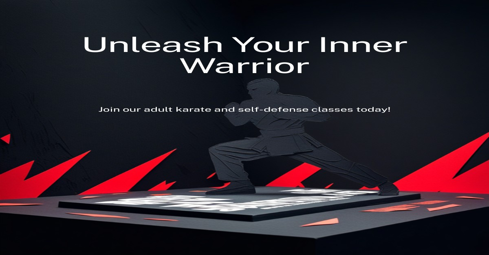

Self-Defense Classes in Kingston Jamaica for Busy Adults: How to Start With No Experience

Self-defense classes in Kingston Jamaica are more accessible than most busy adults think. You do not need prior experience, peak fitness, or a completely cleared schedule. You need the right instruction, a realistic starting point, and a commitment to showing up consistently.
Why Busy Adults Put It Off — and Why That Reasoning Fails
The most common reasons adults delay starting self-defense training are time, confidence, and the belief that they are too out of shape to begin. All three are worth challenging.
Time is real, but it is also managed. Two focused sessions per week — even sixty minutes each — build meaningful skill over months. That is less time than most people spend scrolling. Confidence is not a prerequisite. It is the result. Nobody walks into a first class already confident. And fitness? Training builds it. You do not arrive prepared — you leave more prepared each time.
The only thing that actually stops most adults is waiting for the conditions to be perfect. They never are.
What to Expect in Your First Self-Defense Class
A well-run beginner class does not throw you into sparring on day one. The first sessions are about orientation: how to stand, how to move, how to generate power from your body rather than just your arms, and how to stay calm when your instinct is to panic.
Expect to feel awkward. That is normal and temporary. The goal of the first few classes is not mastery — it is familiarity. You are teaching your body a new language. That takes repetition and patience, not talent.
- Basic striking mechanics: how to form a proper fist, where to aim, how to protect yourself while you move
- Defensive awareness: distance management, reading a situation before it escalates
- Escape techniques: how to break a grip, create space, and exit a confrontation safely
- Controlled breathing: how to manage adrenaline so your training actually works under pressure
How to Fit Training Into a Packed Schedule
The adults who stick with self-defense training long enough to see results treat sessions like appointments — non-negotiable unless something genuinely urgent comes up. That mindset matters more than the schedule itself.
Private coaching gives you the most flexibility. Instead of being locked into a fixed class time, you work directly with the instructor around your availability. Sessions can be shorter and more targeted, which is often more efficient for working adults than a general group class that spends time managing different skill levels.
Group classes, on the other hand, build community and a sense of accountability. Many adults find that training alongside others pushes them past the effort they would put in alone.
The best starting point depends on your schedule, your goals, and whether you learn better with individual attention or in a group environment. Both paths work. What does not work is continuing to wait.
What You Actually Need to Bring
For your first class, the requirements are minimal. Comfortable athletic wear that allows full range of motion, closed-toe shoes with flat soles, a water bottle, and a willingness to look like a beginner. That last one is the most important.
As you progress, you may want to invest in your own gloves and hand wraps. Having your own training gloves keeps sessions more hygienic and gives you something to practice with outside of class. A good mouth guard is also worth having once you begin any contact drills.
The Real Benefit Nobody Talks About
Most people start self-defense training because they want to feel safer. That is a good reason. But the benefit most adults report after a few months of consistent training is something different: they carry themselves differently. They are calmer in difficult situations, more decisive under pressure, and less reactive when stress hits.
Self-defense is partly physical and largely mental. The discipline of showing up, learning something hard, and improving incrementally changes how you handle everything else. That spillover effect is something you cannot get from a YouTube tutorial or a one-off workshop.
FAQ
Do I need to be fit before I start?
No. Training builds your fitness alongside your skill. Most people find their conditioning improves naturally as they train consistently.
Is it safe to train with no experience?
Yes, when the instruction is structured and progressive. Good coaches build beginners up carefully and never rush contact work before students are ready.
How long before I feel genuinely confident?
Most people notice a meaningful shift in awareness and composure within the first two to three months of regular training. Real confidence is built through repetition, not a single class.
What is the difference between group classes and private coaching?
Group classes offer community and fixed structure. Private coaching offers flexibility, personalized correction, and faster progress on the specific areas you want to improve.
Ready to Start?
Master Bryan Kukibo offers self-defense classes and private coaching for busy adults in Kingston, Jamaica — no experience required. Reach out through the contact section on the homepage to ask about scheduling, class options, and what to expect in your first session.
Disclosure: As an Amazon Associate I earn from qualifying purchases. Links may be affiliate links that support this site at no extra cost to you.